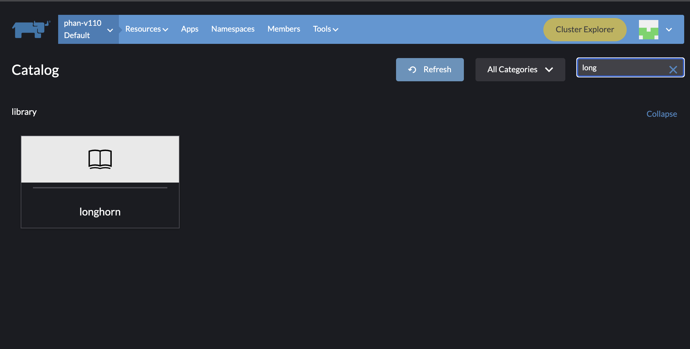
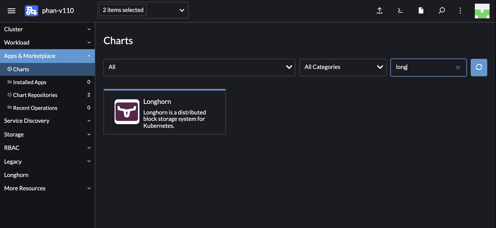

Upgrade Longhorn Manager
Upgrading from v1.6.x
We only support upgrading to v1.8 from v1.6.x. For other versions, please upgrade to v1.6.x first.
SUSE Storage v1.7.x to v1.8 support live engine upgrades.
For airgap upgrades when Longhorn is installed as a Rancher app, you will need to modify the image names and remove the registry URL part.
For example, the image registry.example.com/longhorn/longhorn-manager:v1.8.2 is changed to longhorn/longhorn-manager:v1.8.2 (you can replace v1.8.2 with your desired SUSE Storage version) in Longhorn images section. For more information, see the air gap installation steps here.
Preparing for the Upgrade
If Longhorn was installed using a Helm Chart, or if it was installed as Rancher catalog app, check to make sure the parameters in the default StorageClass weren’t changed. Changing the default StorageClass’s parameter might result in a chart upgrade failure. if you want to reconfigure the parameters in the StorageClass, you can copy the default StorageClass’s configuration to create another StorageClass.
The current default StorageClass has the following parameters:
parameters:
numberOfReplicas: <user specified replica count, 3 by default>
staleReplicaTimeout: "30"
fromBackup: ""
baseImage: ""
Upgrade
|
Always back up volumes before upgrading. If anything goes wrong, you can restore the volume using the backup. |
Upgrade as a Rancher Catalog App
To upgrade the Longhorn App, make sure which Rancher UI the existing Longhorn App was installed with. There are two Rancher UIs, one is the Cluster Manager (old UI), and the other one is the Cluster Explorer (new UI). The Longhorn App in different UIs considered as two different applications by Rancher. They cannot upgrade to each other. If you installed Longhorn in the Cluster Manager, you need to use the Cluster Manager to upgrade Longhorn to a newer version, and vice versa for the Cluster Explorer.
| Because the Cluster Manager (old UI) is being deprecated, we provided the instruction to migrate the existing Longhorn installation to the Longhorn chart in the Cluster Explorer (new UI) here |
Different Rancher UIs screenshots.
-
The Cluster Manager (old UI)

-
The Cluster Explorer (new UI)

On Kubernetes clusters managed by Rancher 2.1 or newer, the steps to upgrade the catalog app longhorn-system are the similar to the installation steps.
Upgrade with Kubectl
To upgrade with kubectl, run this command:
kubectl apply -f https://raw.githubusercontent.com/longhorn/longhorn/v1.8.2/deploy/longhorn.yamlUpgrade with Helm
To upgrade with Helm, run this command:
helm upgrade longhorn longhorn/longhorn --namespace longhorn-system --version 1.8.2Upgrade with Helm Controller
Update the value of spec.version in the HelmChart YAML file:
spec:
version: v1.8.2 # Replace with the version you would like to upgrade to
chart: longhorn
repo: https://charts.longhorn.io
failurePolicy: abortAlternatively, if using the spec.chartContent key, create a patch file with
spec:
chartContent: <base64 content> # tar cz of longhorn charts directory for release | base64 -w 0and then apply it with
kubectl patch helmchart longhorn -n <namespace> --type merge --patch-file <name of patch file>|
In both cases, ensure that |
Upgrade with Fleet
Update the value of helm.version in the fleet YAML file of your GitOps repository.
helm:
repo: https://charts.longhorn.io
chart: longhorn
version: v1.8.2 # Replace with the version you would like to upgrade to
releaseName: longhornUpgrade with Flux
Update the value of spec.chart.spec.version in the HelmRelease YAML file of your GitOps repository.
spec:
chart:
spec:
chart: longhorn
reconcileStrategy: ChartVersion
sourceRef:
kind: HelmRepository
name: longhorn
version: v1.8.2 # Replace with the version you would like to upgrade toUpgrade with Argo CD
Update the value of targetRevision in the Application YAML file of your GitOps repository.
spec:
project: default
sources:
- chart: longhorn
repoURL: https://charts.longhorn.io
targetRevision: v1.8.2 # Replace with the version you would like to upgrade toThen wait for all the pods to become running and Longhorn UI working. For example:
$ kubectl -n longhorn-system get pod
NAME READY STATUS RESTARTS AGE
engine-image-ei-4dbdb778-nw88l 1/1 Running 0 4m29s
longhorn-ui-b7c844b49-jn5g6 1/1 Running 0 75s
longhorn-manager-z2p8h 1/1 Running 0 71s
instance-manager-b34d5db1fe1e2d52bcfb308be3166cfc 1/1 Running 0 65s
longhorn-driver-deployer-6bd59c9f76-jp6pg 1/1 Running 0 75s
engine-image-ei-df38d2e5-zccq5 1/1 Running 0 65s
csi-snapshotter-588457fcdf-h2lgc 1/1 Running 0 30s
csi-resizer-6d8cf5f99f-8v4sp 1/1 Running 1 (30s ago) 37s
csi-snapshotter-588457fcdf-6pgf4 1/1 Running 0 30s
csi-provisioner-869bdc4b79-7ddwd 1/1 Running 1 (30s ago) 44s
csi-snapshotter-588457fcdf-p4kkn 1/1 Running 0 30s
csi-attacher-7bf4b7f996-mfbdn 1/1 Running 1 (30s ago) 50s
csi-provisioner-869bdc4b79-4dc7n 1/1 Running 1 (30s ago) 43s
csi-resizer-6d8cf5f99f-vnspd 1/1 Running 1 (30s ago) 37s
csi-attacher-7bf4b7f996-hrs7w 1/1 Running 1 (30s ago) 50s
csi-attacher-7bf4b7f996-rt2s9 1/1 Running 1 (30s ago) 50s
csi-resizer-6d8cf5f99f-7vv89 1/1 Running 1 (30s ago) 37s
csi-provisioner-869bdc4b79-sn6zr 1/1 Running 1 (30s ago) 43s
longhorn-csi-plugin-b2zzj 2/2 Running 0 24sNext, upgrade Longhorn engine.
Upgrading from Unsupported Versions
We only support upgrading to v1.8 from v1.6.x. For other versions, please upgrade to v1.6.x first.
If you attempt to upgrade from an unsupported version, the upgrade will fail. When encountering an upgrade failure, please consider the following scenarios to recover the state based on different upgrade methods.
Upgrade with Kubectl
When you upgrade with kubectl by running this command:
kubectl apply -f https://raw.githubusercontent.com/longhorn/longhorn/v1.8.2/deploy/longhorn.yamlLonghorn will block the upgrade process and provide the failure reason in the logs of the longhorn-manager pod.
During the upgrade failure, the user’s Longhorn system should remain intact without any impacts except longhorn-manager daemon set.
To recover, you need to apply the manifest of the previously installed version using the following command:
kubectl apply -f https://raw.githubusercontent.com/longhorn/longhorn/[previous installed version]/deploy/longhorn.yamlBesides, users might need to delete new components introduced by the new version manually.
Upgrade with Helm or Rancher App Marketplace
To prevent any impact caused by failed upgrades from unsupported versions, Longhorn will automatically initiate a new job (pre-upgrade) to verify if the upgrade path is supported before upgrading when upgrading through Helm or Rancher App Marketplace.
The pre-upgrade job blocks the upgrade process and provides the cause of the failure in the pod logs.
Example:
2m33s Normal Created Pod/longhorn-pre-upgrade-v5tqq Created container longhorn-pre-upgrade
2m33s Warning FailedUpgradePreCheck /longhorn-pre-upgrade failed to upgrade since upgrading from v1.6.2 to v1.8.0 for minor version is not supportedDuring upgrade failure, the Longhorn system should remain intact without any impact.
To recover, run the following commands to roll back to the previously installed revision:
# get previous installed Longhorn REVISION
helm history longhorn
helm rollback longhorn [REVISION]
# or
helm upgrade longhorn longhorn/longhorn --namespace longhorn-system --version [previous installed version]To recover, you need to upgrade to the previously installed revision at Rancher App Marketplace again.
TroubleShooting
-
Error:
"longhorn" is invalid: provisioner: Forbidden: updates to provisioner are forbidden.-
This means there are some modifications applied to the default storageClass and you need to clean up the old one before upgrade.
-
To clean up the deprecated StorageClass, run this command:
kubectl delete -f https://raw.githubusercontent.com/longhorn/longhorn/v1.8.2/examples/storageclass.yaml
-
-